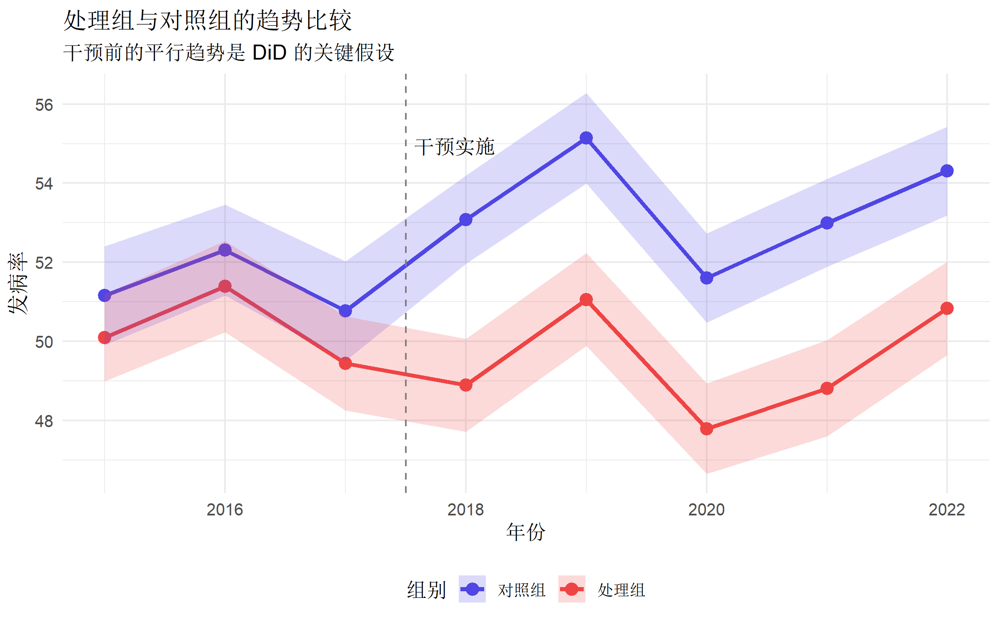
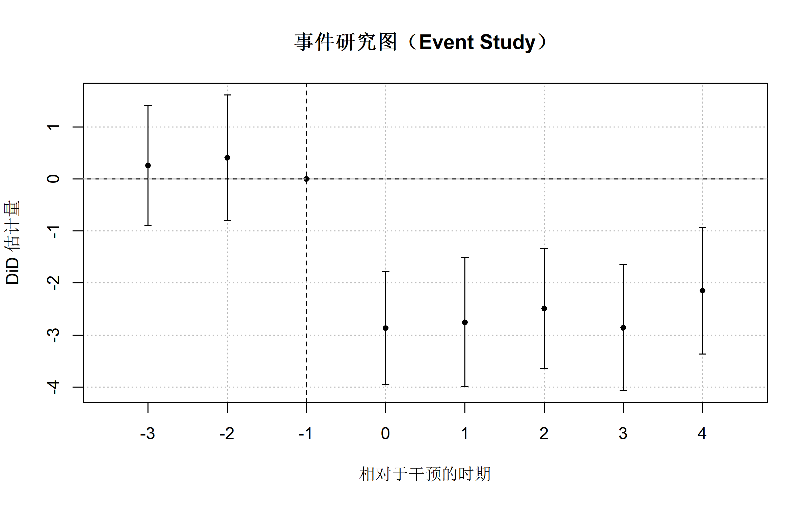
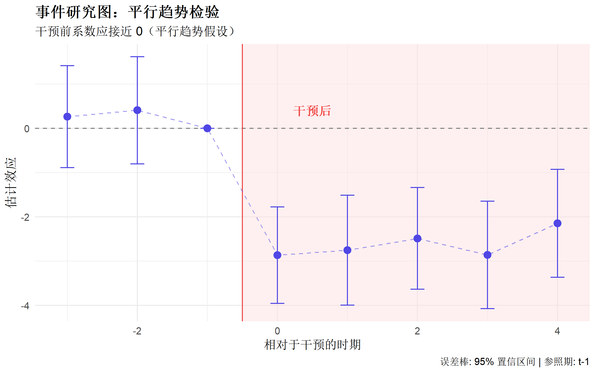
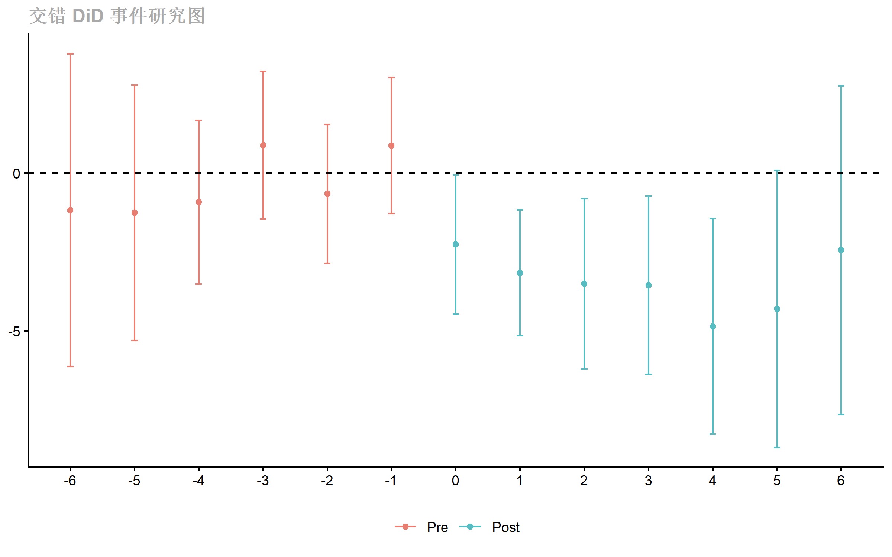
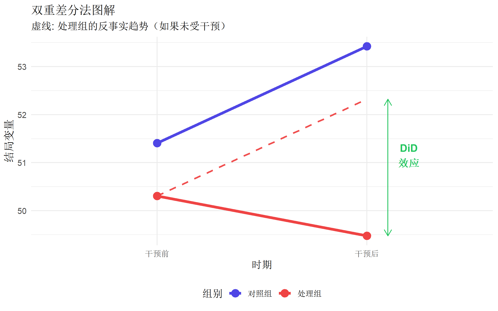

# 核心包
library(tidyverse) # 数据处理
library(fixest) # 固定效应模型（推荐）
library(did) # Callaway & Sant'Anna DiD
library(plm) # 面板数据
library(ggplot2) # 可视化
library(broom) # 模型整理双重差分法 (DiD) 完全指南
R语言方法
因果推断
DiD
什么是双重差分法？
双重差分法（Difference-in-Differences, DiD） 是一种准实验设计方法，用于估计政策干预或事件的因果效应。它通过比较处理组和对照组在干预前后的变化差异来识别效应。
核心思想
\[\text{DiD} = (\bar{Y}_{treat,post} - \bar{Y}_{treat,pre}) - (\bar{Y}_{control,post} - \bar{Y}_{control,pre})\]
| 对比 | 含义 |
|---|---|
| 第一重差分 | 比较前后时间变化 |
| 第二重差分 | 比较处理组与对照组 |
适用场景
| 场景 | 示例 |
|---|---|
| 政策评估 | 最低工资调整对就业的影响 |
| 公共卫生 | 禁烟令对健康的影响 |
| 医疗干预 | 新药上市对处方行为的影响 |
| 教育政策 | 学费补贴对入学率的影响 |
核心假设
平行趋势假设（Parallel Trends）： > 如果没有干预，处理组和对照组的结局变量会呈现相同的时间趋势。
这是 DiD 方法最关键的假设！
R 包安装与加载
数据准备
模拟一个政策评估场景：某地区在 2018 年实施健康干预政策
# 模拟面板数据
set.seed(2024)
n_units <- 200 # 地区数
n_periods <- 8 # 时间期数 (2015-2022)
treat_time <- 4 # 干预发生时点 (第4期=2018年)
# 生成基础面板结构
panel_data <- expand_grid(
unit_id = 1:n_units,
time = 1:n_periods
) |>
mutate(
year = 2014 + time,
# 处理组分配（50%的地区接受干预）
treated = as.integer(unit_id <= n_units / 2),
# 干预后标记
post = as.integer(time >= treat_time),
# DiD 交互项
did = treated * post,
# 单位固定效应
unit_fe = rep(rnorm(n_units, 0, 5), each = n_periods),
# 时间固定效应
time_fe = rep(rnorm(n_periods, 0, 2), n_units),
# 个体时变协变量
population = round(100000 + 50000 * rnorm(n()) + 5000 * time),
income = round(30000 + 2000 * time + rnorm(n(), 0, 5000))
)
# 生成结局变量：疾病发病率
# 真实干预效应 = -3（降低 3 个发病率单位）
panel_data <- panel_data |>
mutate(
# 基线发病率
baseline_rate = 50 + unit_fe + time_fe,
# 处理效应（真实效应 = -3）
treatment_effect = -3 * did,
# 平行趋势（干预前两组趋势相同）
common_trend = 0.5 * time,
# 最终结局
outcome = baseline_rate + common_trend + treatment_effect +
rnorm(n(), 0, 3),
# 转为因子
unit_id = factor(unit_id),
year = factor(year)
)
glimpse(panel_data)Rows: 1,600
Columns: 14
$ unit_id <fct> 1, 1, 1, 1, 1, 1, 1, 1, 2, 2, 2, 2, 2, 2, 2, 2, 3, 3,…
$ time <int> 1, 2, 3, 4, 5, 6, 7, 8, 1, 2, 3, 4, 5, 6, 7, 8, 1, 2,…
$ year <fct> 2015, 2016, 2017, 2018, 2019, 2020, 2021, 2022, 2015,…
$ treated <int> 1, 1, 1, 1, 1, 1, 1, 1, 1, 1, 1, 1, 1, 1, 1, 1, 1, 1,…
$ post <int> 0, 0, 0, 1, 1, 1, 1, 1, 0, 0, 0, 1, 1, 1, 1, 1, 0, 0,…
$ did <int> 0, 0, 0, 1, 1, 1, 1, 1, 0, 0, 0, 1, 1, 1, 1, 1, 0, 0,…
$ unit_fe <dbl> 4.9098471, 4.9098471, 4.9098471, 4.9098471, 4.9098471…
$ time_fe <dbl> 0.004378923, 0.950728669, -1.555484993, 0.410755350, …
$ population <dbl> 149028, 131568, 80453, 147967, 96810, -7116, 167134, …
$ income <dbl> 26219, 36752, 46703, 30755, 36470, 36142, 46737, 5285…
$ baseline_rate <dbl> 54.91423, 55.86058, 53.35436, 55.32060, 56.95494, 52.…
$ treatment_effect <dbl> 0, 0, 0, -3, -3, -3, -3, -3, 0, 0, 0, -3, -3, -3, -3,…
$ common_trend <dbl> 0.5, 1.0, 1.5, 2.0, 2.5, 3.0, 3.5, 4.0, 0.5, 1.0, 1.5…
$ outcome <dbl> 51.27613, 57.68301, 53.51673, 52.82152, 54.10289, 48.…探索性分析
# 计算各组各时期的均值
group_means <- panel_data |>
group_by(treated, time) |>
summarise(
mean_outcome = mean(outcome),
se = sd(outcome) / sqrt(n()),
.groups = "drop"
) |>
mutate(
group = factor(treated, labels = c("对照组", "处理组")),
year = 2014 + time
)
# 可视化趋势
ggplot(group_means, aes(x = year, y = mean_outcome, color = group)) +
geom_line(linewidth = 1.2) +
geom_point(size = 3) +
geom_ribbon(aes(
ymin = mean_outcome - 1.96 * se,
ymax = mean_outcome + 1.96 * se,
fill = group
), alpha = 0.2, color = NA) +
geom_vline(xintercept = 2017.5, linetype = "dashed", color = "gray50") +
annotate("text",
x = 2017.5, y = max(group_means$mean_outcome),
label = "干预实施", hjust = -0.1, vjust = 1
) +
scale_color_manual(values = c("#4f46e5", "#ef4444")) +
scale_fill_manual(values = c("#4f46e5", "#ef4444")) +
labs(
title = "处理组与对照组的趋势比较",
subtitle = "干预前的平行趋势是 DiD 的关键假设",
x = "年份",
y = "发病率",
color = "组别",
fill = "组别"
) +
theme_minimal(base_size = 12) +
theme(legend.position = "bottom")
基础 DiD 估计
2×2 DiD（最简单情况）
# 保留干预前后各一期
did_2x2 <- panel_data |>
filter(time %in% c(3, 5)) # 干预前一期 vs 干预后一期
# 基础 DiD 回归
basic_did <- lm(outcome ~ treated + post + did, data = did_2x2)
summary(basic_did)
Call:
lm(formula = outcome ~ treated + post + did, data = did_2x2)
Residuals:
Min 1Q Median 3Q Max
-18.5866 -3.9671 -0.1156 4.0321 16.3757
Coefficients:
Estimate Std. Error t value Pr(>|t|)
(Intercept) 50.7672 0.6081 83.485 < 2e-16 ***
treated -1.3255 0.8600 -1.541 0.1240
post 4.3712 0.8600 5.083 5.74e-07 ***
did -2.7537 1.2162 -2.264 0.0241 *
---
Signif. codes: 0 '***' 0.001 '**' 0.01 '*' 0.05 '.' 0.1 ' ' 1
Residual standard error: 6.081 on 396 degrees of freedom
Multiple R-squared: 0.1104, Adjusted R-squared: 0.1036
F-statistic: 16.37 on 3 and 396 DF, p-value: 4.748e-10# 解读：did 系数就是 DiD 估计量
cat("DiD 估计量:", round(coef(basic_did)["did"], 3), "\n")DiD 估计量: -2.754 cat("真实效应: -3.000\n")真实效应: -3.000手动计算 DiD
# 手动验证 DiD
means_table <- panel_data |>
filter(time %in% c(3, 5)) |>
group_by(treated, post) |>
summarise(mean_y = mean(outcome), .groups = "drop") |>
pivot_wider(
names_from = post, values_from = mean_y,
names_prefix = "post_"
)
means_table# A tibble: 2 × 3
treated post_0 post_1
<int> <dbl> <dbl>
1 0 50.8 55.1
2 1 49.4 51.1# DiD = (处理组后 - 处理组前) - (对照组后 - 对照组前)
did_manual <- (means_table$post_1[2] - means_table$post_0[2]) -
(means_table$post_1[1] - means_table$post_0[1])
cat("手动计算 DiD:", round(did_manual, 3), "\n")手动计算 DiD: -2.754 双向固定效应 DiD（TWFE）
使用面板数据的标准方法：
# 使用 fixest 包（推荐）
twfe_model <- feols(
outcome ~ did | unit_id + year, # 单位固定效应 + 时间固定效应
data = panel_data,
cluster = ~unit_id # 聚类标准误
)
summary(twfe_model)OLS estimation, Dep. Var.: outcome
Observations: 1,600
Fixed-effects: unit_id: 200, year: 8
Standard-errors: Clustered (unit_id)
Estimate Std. Error t value Pr(>|t|)
did -2.84542 0.297556 -9.56264 < 2.2e-16 ***
---
Signif. codes: 0 '***' 0.001 '**' 0.01 '*' 0.05 '.' 0.1 ' ' 1
RMSE: 2.8407 Adj. R2: 0.760579
Within R2: 0.055525添加控制变量
# 添加时变协变量
twfe_controls <- feols(
outcome ~ did + log(population) + log(income) | unit_id + year,
data = panel_data,
cluster = ~unit_id
)
summary(twfe_controls)OLS estimation, Dep. Var.: outcome
Observations: 1,591
Fixed-effects: unit_id: 200, year: 8
Standard-errors: Clustered (unit_id)
Estimate Std. Error t value Pr(>|t|)
did -2.818033 0.295763 -9.527999 < 2.2e-16 ***
log(population) -0.115437 0.155857 -0.740660 0.45977
log(income) 0.495693 0.590165 0.839922 0.40196
---
Signif. codes: 0 '***' 0.001 '**' 0.01 '*' 0.05 '.' 0.1 ' ' 1
RMSE: 2.84025 Adj. R2: 0.760808
Within R2: 0.054949模型比较
# 使用 fixest 的模型比较表格
etable(twfe_model, twfe_controls,
headers = c("基础模型", "含控制变量"),
fitstat = c("n", "r2", "ar2")
) twfe_model twfe_controls
基础模型 含控制变量
Dependent Var.: outcome outcome
did -2.845*** (0.2976) -2.818*** (0.2958)
log(population) -0.1154 (0.1559)
log(income) 0.4957 (0.5902)
Fixed-Effects: ------------------ ------------------
unit_id Yes Yes
year Yes Yes
_______________ __________________ __________________
S.E.: Clustered by: unit_id by: unit_id
Observations 1,600 1,591
R2 0.79157 0.79225
Adj. R2 0.76058 0.76081
---
Signif. codes: 0 '***' 0.001 '**' 0.01 '*' 0.05 '.' 0.1 ' ' 1平行趋势检验
事件研究法（Event Study）
事件研究法是检验平行趋势的标准方法：
# 创建相对时间变量
panel_data <- panel_data |>
mutate(
rel_time = time - treat_time,
# 创建各期指示变量（处理组 × 相对时期）
rel_time_factor = factor(rel_time)
)
# 事件研究回归（以 t-1 为参照期）
es_model <- feols(
outcome ~ i(rel_time_factor, treated, ref = -1) | unit_id + year,
data = panel_data,
cluster = ~unit_id
)
summary(es_model)OLS estimation, Dep. Var.: outcome
Observations: 1,600
Fixed-effects: unit_id: 200, year: 8
Standard-errors: Clustered (unit_id)
Estimate Std. Error t value Pr(>|t|)
rel_time_factor::-3:treated 0.261268 0.583770 0.447552 6.5496e-01
rel_time_factor::-2:treated 0.405381 0.613904 0.660333 5.0980e-01
rel_time_factor::0:treated -2.865183 0.551963 -5.190901 5.1468e-07 ***
rel_time_factor::1:treated -2.753691 0.629742 -4.372727 1.9767e-05 ***
rel_time_factor::2:treated -2.487630 0.583297 -4.264777 3.0907e-05 ***
rel_time_factor::3:treated -2.860663 0.615626 -4.646752 6.1265e-06 ***
rel_time_factor::4:treated -2.148864 0.617776 -3.478385 6.1956e-04 ***
---
Signif. codes: 0 '***' 0.001 '**' 0.01 '*' 0.05 '.' 0.1 ' ' 1
RMSE: 2.83817 Adj. R2: 0.75997
Within R2: 0.057206# 可视化事件研究图
iplot(es_model,
main = "事件研究图（Event Study）",
xlab = "相对于干预的时期",
ylab = "DiD 估计量"
)
# 添加参照线
abline(h = 0, lty = 2, col = "gray")
abline(v = -0.5, lty = 2, col = "red")
自定义事件研究图
# 提取事件研究系数
es_coefs <- tidy(es_model, conf.int = TRUE) |>
filter(str_detect(term, "rel_time")) |>
mutate(
rel_time = as.numeric(str_extract(term, "-?\\d+")),
significant = p.value < 0.05
)
# 添加参照期（t-1 = 0）
es_coefs <- bind_rows(
es_coefs,
tibble(rel_time = -1, estimate = 0, conf.low = 0, conf.high = 0)
) |>
arrange(rel_time)
# 高质量可视化
ggplot(es_coefs, aes(x = rel_time, y = estimate)) +
# 阴影区分干预前后
annotate("rect",
xmin = -0.5, xmax = Inf, ymin = -Inf, ymax = Inf,
fill = "#fee2e2", alpha = 0.5
) +
# 参照线
geom_hline(yintercept = 0, linetype = "dashed", color = "gray50") +
geom_vline(xintercept = -0.5, linetype = "solid", color = "#ef4444") +
# 置信区间
geom_errorbar(aes(ymin = conf.low, ymax = conf.high),
width = 0.2, color = "#4f46e5"
) +
# 点估计
geom_point(size = 3, color = "#4f46e5") +
geom_line(linetype = "dashed", color = "#4f46e5", alpha = 0.5) +
# 标注干预点
annotate("text",
x = 0.5, y = max(es_coefs$estimate, na.rm = TRUE),
label = "干预后", color = "#ef4444", fontface = "bold"
) +
labs(
title = "事件研究图：平行趋势检验",
subtitle = "干预前系数应接近 0（平行趋势假设）",
x = "相对于干预的时期",
y = "估计效应",
caption = "误差棒: 95% 置信区间 | 参照期: t-1"
) +
theme_minimal(base_size = 12) +
theme(plot.title = element_text(face = "bold"))
平行趋势的正式检验
# 联合检验：干预前所有系数是否同时为 0
pre_treatment_terms <- names(coef(es_model))[str_detect(names(coef(es_model)), ":-[2-9]|:-1[0-9]")]
# 如果有干预前的系数，进行 F 检验
if (length(pre_treatment_terms) > 0) {
wald_test <- wald(es_model, pre_treatment_terms)
print(wald_test)
}Wald test, H0: joint nullity of rel_time_factor::-3:treated and rel_time_factor::-2:treated
stat = 0.233644, p-value = 0.791675, on 2 and 1,386 DoF, VCOV: Clustered (unit_id).$stat
[1] 0.2336438
$p
[1] 0.791675
$df1
[1] 2
$df2
[1] 1386
$vcov
[1] "Clustered (unit_id)"交错处理 DiD
当不同单位在不同时间接受处理时：
# 模拟交错处理数据
set.seed(42)
staggered_data <- expand_grid(
unit_id = 1:100,
time = 1:10
) |>
mutate(
# 不同单位的处理时点
treat_time_unit = case_when(
unit_id <= 30 ~ 4, # 第一组：第4期处理
unit_id <= 60 ~ 6, # 第二组：第6期处理
unit_id <= 80 ~ 8, # 第三组：第8期处理
TRUE ~ NA_real_ # 对照组：从不处理
),
# 处理状态
treated = as.integer(!is.na(treat_time_unit) & time >= treat_time_unit),
# 结局变量
outcome = 50 + rnorm(n(), unit_id / 5, 3) + 0.5 * time - 2.5 * treated + rnorm(n(), 0, 2),
unit_id = factor(unit_id),
year = factor(2014 + time),
cohort = factor(case_when(
treat_time_unit == 4 ~ "2018",
treat_time_unit == 6 ~ "2020",
treat_time_unit == 8 ~ "2022",
TRUE ~ "从不处理"
))
)
head(staggered_data)# A tibble: 6 × 7
unit_id time treat_time_unit treated outcome year cohort
<fct> <int> <dbl> <int> <dbl> <fct> <fct>
1 1 1 4 0 59.5 2015 2018
2 1 2 4 0 50.6 2016 2018
3 1 3 4 0 54.7 2017 2018
4 1 4 4 1 52.4 2018 2018
5 1 5 4 1 49.4 2019 2018
6 1 6 4 1 49.2 2020 2018 Callaway-Sant’Anna 估计器
# 使用 did 包的现代方法
staggered_data_num <- staggered_data |>
mutate(
unit_id = as.numeric(as.character(unit_id)),
time = 2014 + as.numeric(as.character(year)) - 2014,
first_treat = treat_time_unit + 2014,
first_treat = ifelse(is.na(first_treat), 0, first_treat) # 从不处理设为 0
)
# Callaway-Sant'Anna ATT(g,t)
cs_result <- att_gt(
yname = "outcome",
tname = "time",
idname = "unit_id",
gname = "first_treat",
data = as.data.frame(staggered_data_num),
control_group = "nevertreated" # 使用从不处理组作为对照
)
summary(cs_result)
Call:
att_gt(yname = "outcome", tname = "time", idname = "unit_id",
gname = "first_treat", data = as.data.frame(staggered_data_num),
control_group = "nevertreated")
Reference: Callaway, Brantly and Pedro H.C. Sant'Anna. "Difference-in-Differences with Multiple Time Periods." Journal of Econometrics, Vol. 225, No. 2, pp. 200-230, 2021. <https://doi.org/10.1016/j.jeconom.2020.12.001>, <https://arxiv.org/abs/1803.09015>
Group-Time Average Treatment Effects:
Group Time ATT(g,t) Std. Error [95% Simult. Conf. Band]
2018 2016 -1.4185 1.4147 -5.5896 2.7527
2018 2017 0.5697 1.2634 -3.1554 4.2947
2018 2018 -0.7454 1.2441 -4.4138 2.9229
2018 2019 -1.8390 1.4593 -6.1417 2.4637
2018 2020 -1.7104 1.5705 -6.3412 2.9204
2018 2021 -1.3518 1.2803 -5.1268 2.4231
2018 2022 -3.5454 1.3629 -7.5640 0.4732
2018 2023 -4.3045 1.5907 -8.9946 0.3857
2018 2024 -2.4410 1.9255 -8.1183 3.2362
2020 2016 -2.8201 1.4833 -7.1935 1.5533
2020 2017 0.4182 1.2621 -3.3033 4.1397
2020 2018 0.5867 1.2960 -3.2346 4.4080
2020 2019 2.9767 1.2955 -0.8431 6.7964
2020 2020 -4.2941 1.6671 -9.2096 0.6213
2020 2021 -4.7660 1.4661 -9.0888 -0.4433 *
2020 2022 -6.4106 1.4336 -10.6375 -2.1836 *
2020 2023 -5.7517 1.6456 -10.6039 -0.8995 *
2020 2024 -6.1822 1.9778 -12.0138 -0.3506 *
2022 2016 -1.1763 1.6367 -6.0022 3.6496
2022 2017 -1.2594 1.5486 -5.8254 3.3066
2022 2018 1.9291 1.4074 -2.2208 6.0789
2022 2019 1.5848 1.3592 -2.4228 5.5923
2022 2020 -1.3853 1.7944 -6.6760 3.9055
2022 2021 -1.8428 1.5575 -6.4352 2.7496
2022 2022 -1.4912 1.3927 -5.5977 2.6154
2022 2023 -2.7435 1.6262 -7.5385 2.0515
2022 2024 -1.8666 1.7832 -7.1243 3.3910
---
Signif. codes: `*' confidence band does not cover 0
P-value for pre-test of parallel trends assumption: 0.27625
Control Group: Never Treated, Anticipation Periods: 0
Estimation Method: Doubly Robust# 聚合为整体 ATT
cs_agg <- aggte(cs_result, type = "simple")
summary(cs_agg)
Call:
aggte(MP = cs_result, type = "simple")
Reference: Callaway, Brantly and Pedro H.C. Sant'Anna. "Difference-in-Differences with Multiple Time Periods." Journal of Econometrics, Vol. 225, No. 2, pp. 200-230, 2021. <https://doi.org/10.1016/j.jeconom.2020.12.001>, <https://arxiv.org/abs/1803.09015>
ATT Std. Error [ 95% Conf. Int.]
-3.3864 0.7648 -4.8853 -1.8875 *
---
Signif. codes: `*' confidence band does not cover 0
Control Group: Never Treated, Anticipation Periods: 0
Estimation Method: Doubly Robust# 事件研究图
cs_dynamic <- aggte(cs_result, type = "dynamic")
ggdid(cs_dynamic, title = "交错 DiD 事件研究图")
安慰剂检验
时间安慰剂
# 假设干预发生在更早的时间
panel_data_placebo <- panel_data |>
mutate(
# 假装干预在 t=2 时发生
fake_post = as.integer(time >= 2 & time < 4),
fake_did = treated * fake_post
) |>
filter(time < 4) # 只用干预前数据
placebo_model <- feols(
outcome ~ fake_did | unit_id + time,
data = panel_data_placebo,
cluster = ~unit_id
)
summary(placebo_model)OLS estimation, Dep. Var.: outcome
Observations: 600
Fixed-effects: unit_id: 200, time: 3
Standard-errors: Clustered (unit_id)
Estimate Std. Error t value Pr(>|t|)
fake_did -0.058577 0.526645 -0.111227 0.91155
---
Signif. codes: 0 '***' 0.001 '**' 0.01 '*' 0.05 '.' 0.1 ' ' 1
RMSE: 2.48101 Adj. R2: 0.749052
Within R2: 3.097e-5# 如果 fake_did 显著，说明平行趋势假设可能不满足组别安慰剂
# 在从未处理的组中随机分配"假处理"
never_treated <- panel_data |>
filter(treated == 0) |>
mutate(
fake_treated = as.integer(unit_id %in% sample(
unique(unit_id),
length(unique(unit_id)) / 2
)),
fake_did = fake_treated * post
)
placebo_group <- feols(
outcome ~ fake_did | unit_id + year,
data = never_treated,
cluster = ~unit_id
)
summary(placebo_group)OLS estimation, Dep. Var.: outcome
Observations: 800
Fixed-effects: unit_id: 100, year: 8
Standard-errors: Clustered (unit_id)
Estimate Std. Error t value Pr(>|t|)
fake_did 0.353765 0.442619 0.799253 0.42606
---
Signif. codes: 0 '***' 0.001 '**' 0.01 '*' 0.05 '.' 0.1 ' ' 1
RMSE: 2.78359 Adj. R2: 0.756684
Within R2: 9.455e-4# fake_did 应该不显著结果可视化
DiD 图解
# 创建直观的 DiD 可视化
did_visual <- panel_data |>
group_by(treated, post) |>
summarise(mean_y = mean(outcome), .groups = "drop") |>
mutate(
group = factor(treated, labels = c("对照组", "处理组")),
period = factor(post, labels = c("干预前", "干预后"))
)
# 绘图
ggplot(did_visual, aes(x = period, y = mean_y, color = group, group = group)) +
geom_line(linewidth = 1.5) +
geom_point(size = 4) +
# 添加反事实线
geom_segment(
aes(
x = 1, xend = 2,
y = did_visual$mean_y[did_visual$group == "处理组" & did_visual$period == "干预前"],
yend = did_visual$mean_y[did_visual$group == "处理组" & did_visual$period == "干预前"] +
diff(did_visual$mean_y[did_visual$group == "对照组"])
),
linetype = "dashed", color = "#ef4444", alpha = 0.5, linewidth = 1
) +
# 标注 DiD
annotate("segment",
x = 2.1, xend = 2.1,
y = did_visual$mean_y[did_visual$group == "处理组" & did_visual$period == "干预后"],
yend = did_visual$mean_y[did_visual$group == "处理组" & did_visual$period == "干预前"] +
diff(did_visual$mean_y[did_visual$group == "对照组"]),
arrow = arrow(length = unit(0.3, "cm"), ends = "both"),
color = "#22c55e"
) +
annotate("text",
x = 2.2, y = mean(did_visual$mean_y),
label = "DiD\n效应", color = "#22c55e", fontface = "bold"
) +
scale_color_manual(values = c("#4f46e5", "#ef4444")) +
labs(
title = "双重差分法图解",
subtitle = "虚线: 处理组的反事实趋势（如果未受干预）",
x = "时期",
y = "结局变量",
color = "组别"
) +
theme_minimal(base_size = 12) +
theme(legend.position = "bottom")
异质性分析
# 按协变量分组估计异质性效应
panel_data <- panel_data |>
mutate(
income_group = ifelse(income > median(income), "高收入", "低收入")
)
# 分组回归
het_model <- feols(
outcome ~ did | unit_id + year,
data = panel_data,
cluster = ~unit_id,
split = ~income_group
)
etable(het_model) het_model.1 het_model.2
Sample (income_group) 低收入 高收入
Dependent Var.: outcome outcome
did -3.387*** (0.4936) -2.238*** (0.5974)
Fixed-Effects: ------------------ ------------------
unit_id Yes Yes
year Yes Yes
_____________________ __________________ __________________
S.E.: Clustered by: unit_id by: unit_id
Observations 799 798
R2 0.83248 0.81211
Within R2 0.07877 0.01714
---
Signif. codes: 0 '***' 0.001 '**' 0.01 '*' 0.05 '.' 0.1 ' ' 1常见问题与陷阱
1. 平行趋势假设
# 这是 DiD 的核心假设，无法直接检验
# 解决方案：
# - 事件研究图
# - 安慰剂检验
# - 收集更多干预前时期
# - 使用合成控制法作为补充2. 预期效应
# 如果处理组在干预前就开始改变行为
# 干预前系数可能不为 0
# 需要理解政策公布和实施的时间差3. 溢出效应
# 如果处理影响了对照组
# DiD 估计会有偏
# 需要选择不受影响的对照组4. 交错处理下的 TWFE 问题
# 标准 TWFE 在交错处理下可能有偏
# 推荐使用：
# - Callaway-Sant'Anna (2021)
# - Sun-Abraham (2021)
# - de Chaisemartin-D'Haultfœuille (2020)5. 标准误聚类
# 面板数据通常需要在处理单位层面聚类
# 如果处理单位少（< 50），考虑 Wild bootstrap完整分析模板
# ========== DiD 分析完整流程 ==========
library(fixest)
library(did)
# 1. 数据准备
data <- data |>
mutate(
did = treated * post
)
# 2. 可视化趋势
# 检查干预前是否平行
# 3. 基础 TWFE 估计
model <- feols(y ~ did | unit + time, data, cluster = ~unit)
# 4. 事件研究
es <- feols(y ~ i(rel_time, treated, ref = -1) | unit + time, data)
iplot(es)
# 5. 安慰剂检验
# 时间安慰剂 + 组别安慰剂
# 6. 稳健性检验
# - 不同控制组
# - 不同时间窗口
# - 添加/移除控制变量
# 7. 交错处理（如适用）
cs <- att_gt(yname, tname, idname, gname, data)
aggte(cs, type = "simple")总结
| 步骤 | 内容 | R 函数/包 |
|---|---|---|
| 数据准备 | 创建 DiD 交互项 | mutate() |
| 趋势可视化 | 检查平行趋势 | ggplot2 |
| TWFE 估计 | 双向固定效应 | fixest::feols() |
| 事件研究 | 平行趋势检验 | i() + iplot() |
| 交错 DiD | 现代估计器 | did::att_gt() |
| 安慰剂检验 | 稳健性 | 手动构造 |
报告 DiD 分析的 Checklist
推荐阅读
- Cunningham S. Causal Inference: The Mixtape
- Angrist JD, Pischke JS. Mostly Harmless Econometrics
- Callaway B, Sant’Anna PHC (2021). Difference-in-Differences with Multiple Time Periods. J Econometrics
- fixest 包文档
- did 包文档